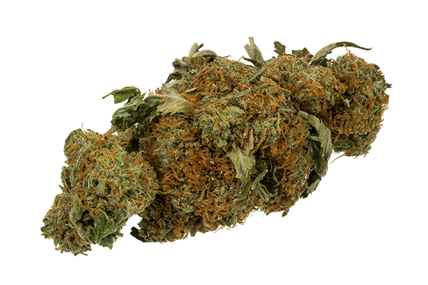

Type:
Cannabis Sativa plants grow wild throughout most of the tropical and temperate zones of the world. The biologically active agent in the cannabis plant Tetra-hydro-cannibol is highly concentrated in the flowering tops. Herbal cannabis (below left) is produced by drying the leaves for several days. Dried cannabis can maintain its potency for several years. The active ingredient can be concentrated by extracting a sticky resin from the flowering tops and once dried, the resin forms into hard black-brown lumps (Below centre). Finally, the most potent form of cannabis is oil (Below right) which is produced by further refining cannabis resin.
Effects:
Abusers will experience relaxed state, dilated pupils, hunger and more vivid senses of sight, smell, taste and touch after consumption. Increased talkativeness, mild hallucinations, clumsy and slow reactions. Long-term abusers commonly suffer endocrine disorder, conjunctivitis, bronchitis and smoking-related diseases.